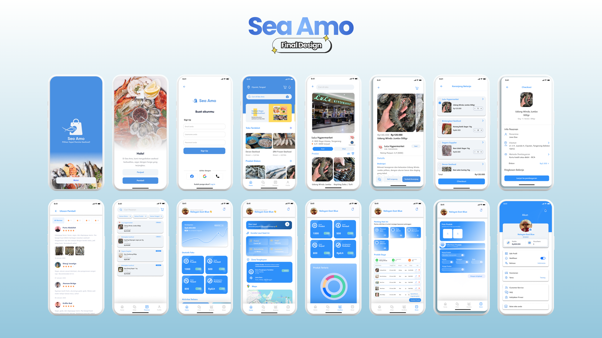

Problem Statement
Small-scale fishermen often rely on middlemen to sell their daily catch, which can result in significantly lower earnings compared to market prices. At the same time, consumers have limited access to fresh seafood directly from fishermen. This creates a gap between supply and demand. A digital marketplace can help fishermen sell their catch more independently while giving consumers easier access to fresh seafood.
Design Goals
- Create a simple and accessible seafood marketplace for both fishermen and consumers.
- Enable fishermen to list and sell their catch with transparent pricing.
- Simplify the seafood purchasing process through an intuitive mobile interface.
- Support faster product discovery with visual search and clear product categories.
Design Process
ResearchConducted interviews with fishermen, seafood consumers, and middlemen to understand how seafood transactions currently work.
WireframesDeveloped early wireframes focusing on product discovery, image-based search, and a simplified seafood purchasing flow to make the platform accessible for both buyers and fishermen.
UI ExplorationDesigned a clean, ocean-inspired interface in Figma with clear visual hierarchy, intuitive navigation, and product-focused layouts to highlight seafood listings.
Design DecisionsPrioritized features that support direct transactions between fishermen and consumers, transparent pricing, and quick seafood discovery through visual search and structured product categories.
Final Design

Key Takeaways
This project strengthened my ability to design for behavior change. I learned to balance visual appeal with fast usability, and to simplify feature scope so users can stay focused on daily wins.